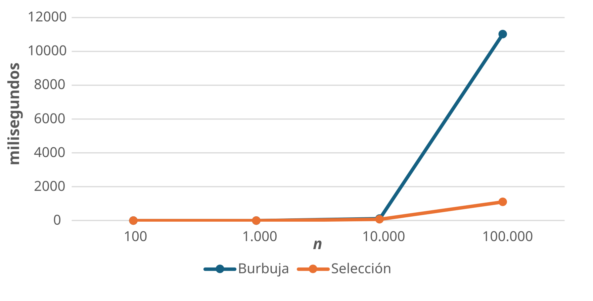

Los objetivos de la sexta práctica de la asignatura son los siguientes:
Dado un vector de \(n\) números enteros, el objetivo de esta práctica es implementar dos algoritmos de ordenación: el algoritmo de ordenación de burbuja (bubble sort) y el algoritmo de selección (selection sort). Ambos algoritmos son métodos sencillos para ordenar una lista de elementos, aunque no son los más eficientes para grandes conjuntos de datos. Sin embargo, son útiles para entender los conceptos básicos de ordenación y complejidad algorítmica.
El algoritmo de ordenación de burbuja funciona comparando cada par de elementos adyacentes e intercambiándolos si están en el orden incorrecto. Este proceso se repite hasta que la lista está completamente ordenada.
Por ejemplo, dado un vector de \(n\) números enteros, el proceso a seguir sería el siguiente:
A continuación se muestra un ejemplo del algoritmo de ordenación de burbuja para visualizar el proceso de ordenación paso a paso.
// pre-computamos todos los pasos del Bubble Sort
stepsBS = {
let arr = [...baseArr];
const out = [];
const n = arr.length;
let sortedBound = n;
out.push({ type: "start", arr: [...arr], i: null, j: null, sortedBound });
for (let i = 0; i < n - 1; i++) {
let swapped = false;
for (let j = 0; j < n - i - 1; j++) {
out.push({ type: "compare", arr: [...arr], i: j, j: j+1, sortedBound });
if (arr[j] > arr[j + 1]) {
let temp = arr[j];
arr[j] = arr[j + 1];
arr[j + 1] = temp;
swapped = true;
out.push({ type: "swap", arr: [...arr], i: j, j: j+1, sortedBound });
}
}
sortedBound = n - i - 1;
if (!swapped) break;
}
out.push({ type: "done", arr: [...arr], i: null, j: null, sortedBound: 0 });
return out;
}// controles unificados: Botón Regenerar, Botón Reproducir y Slider
viewof stepBS = {
const max = stepsBS.length - 1;
// Añadimos flex-wrap por si la pantalla es muy estrecha
const form = html`<form style="display: flex; align-items: center; gap: 15px; width: 100%; margin-top: 15px; flex-wrap: wrap;">
<button type="button" class="btn btn-secondary btn-sm rand-btn" style="color: #eee; font-weight: bold; font-size: 0.9em;">🎲 Regenerar</button>
<button type="button" class="btn btn-primary btn-sm play-btn" style="color: #eee; font-weight: bold; font-size: 0.9em;">▶ Reproducir</button>
<label style="font-weight: bold; white-space: nowrap; font-size: 0.9em;">Paso:</label>
<input type="range" min="0" max="${max}" value="0" style="flex-grow: 1;">
<output style="min-width: 30px; text-align: right; font-weight: bold;">0</output>
</form>`;
const randBtn = form.querySelector(".rand-btn");
const btn = form.querySelector(".play-btn");
const range = form.querySelector("input[type=range]");
const out = form.querySelector("output");
let timer;
let isPlaying = false;
// Disparar la generación de un nuevo vector
randBtn.onclick = () => {
mutable randTrigger++;
};
const update = () => {
out.value = range.value;
form.value = parseInt(range.value);
form.dispatchEvent(new Event("input", { bubbles: true }));
};
range.oninput = () => {
if (isPlaying) btn.click();
update();
};
btn.onclick = () => {
isPlaying = !isPlaying;
btn.innerHTML = isPlaying ? "⏸ Pausar" : "▶ Reproducir";
btn.classList.toggle("btn-primary", !isPlaying);
btn.classList.toggle("btn-danger", isPlaying);
if (isPlaying) {
if (parseInt(range.value) >= max) {
range.value = 0;
update();
}
timer = setInterval(() => {
let val = parseInt(range.value);
if (val < max) {
range.value = val + 1;
update();
} else {
btn.click();
}
}, 1100);
} else {
clearInterval(timer);
}
};
form.value = 0;
return form;
}// renderizado visual con Observable Plot
{
if (!stepsBS || stepsBS.length === 0) return html`<div>Cargando...</div>`;
const safeStep = Math.min(stepBS, stepsBS.length - 1);
const s = stepsBS[safeStep];
if (!s) return html`<div>Cargando...</div>`;
const arr = s.arr;
const grid = arr.map((val, idx) => {
let bgColor = "#2a9d8f";
if (idx >= s.sortedBound) bgColor = "#457b9d";
if (idx === s.i || idx === s.j) {
bgColor = s.type === "swap" ? "#e63946" : "#f4a261";
}
if (s.type === "done") bgColor = "#457b9d";
return { n: idx, value: val, color: bgColor };
});
return html`
<div style="margin-top:20px;">
${Plot.plot({
height: 80,
margin: 10,
x: { axis: null, domain: [-0.5, arr.length - 0.5] },
y: { axis: null, domain: [0, 1] },
color: { type: "identity" },
marks: [
Plot.rect(grid, { x1: d => d.n - 0.45, x2: d => d.n + 0.45, y1: 0, y2: 1, fill: "color", stroke: "white", rx: 4 }),
Plot.text(grid, { x: "n", y: 0.5, text: "value", fill: "white", fontSize: 16, fontWeight: "bold" })
]
})}
<div style="margin-top:20px; font-size: 1.15em; height: 1.5em; text-align: center;">
${s.type === "start" ? html`🚀 Vector inicial. Comenzando ordenación de burbuja` :
s.type === "compare" ? html`🔎 Comparando índices: ¿es <b>${arr[s.i]}</b> mayor que <b>${arr[s.j]}</b>?` :
s.type === "swap" ? html`🔄 Intercambiando posiciones` : html`✅ Ordenamiento completado con éxito`}
</div>
<div style="margin-top:15px; display:flex; gap:15px; justify-content:center; font-size:0.85em; color:#555;">
<span><span style="display:inline-block; width:12px; height:12px; background:#2a9d8f; margin-right:5px; border-radius:2px;"></span> No ordenado</span>
<span><span style="display:inline-block; width:12px; height:12px; background:#f4a261; margin-right:5px; border-radius:2px;"></span> Comparando</span>
<span><span style="display:inline-block; width:12px; height:12px; background:#e63946; margin-right:5px; border-radius:2px;"></span> Intercambiando</span>
<span><span style="display:inline-block; width:12px; height:12px; background:#457b9d; margin-right:5px; border-radius:2px;"></span> Ordenado</span>
</div>
</div>
`;
}El algoritmo de ordenación por selección funciona dividiendo la lista en dos partes: la parte ordenada y la parte no ordenada. En cada iteración, el algoritmo selecciona el elemento más pequeño de la parte no ordenada y lo intercambia con el primer elemento de esa parte, moviendo así el límite entre las partes ordenada y no ordenada.
Dado un vector de \(n\) números enteros, el proceso a seguir sería el siguiente:
A continuación se muestra una animación paso a paso del algoritmo de ordenación por selección para visualizar el proceso de ordenación.
// pre-computamos todos los pasos de Selection Sort
stepsSS = {
let arr = [...baseArrSS];
const out = [];
const n = arr.length;
// En Selection Sort, los elementos ordenados crecen desde la izquierda (índice 0)
let sortedBound = 0;
out.push({ type: "start", arr: [...arr], curr: null, minIdx: null, i: null, j: null, sortedBound });
for (let i = 0; i < n - 1; i++) {
let min_idx = i;
// Mostramos cuál es el mínimo provisional al empezar la pasada
out.push({ type: "new_min", arr: [...arr], curr: i, minIdx: min_idx, i: null, j: null, sortedBound });
for (let j = i + 1; j < n; j++) {
// Estado de comparación con el mínimo actual
out.push({ type: "compare", arr: [...arr], curr: j, minIdx: min_idx, i: null, j: null, sortedBound });
if (arr[j] < arr[min_idx]) {
min_idx = j;
// Estado cuando se encuentra un nuevo mínimo
out.push({ type: "new_min", arr: [...arr], curr: j, minIdx: min_idx, i: null, j: null, sortedBound });
}
}
if (min_idx !== i) {
// Intercambio del mínimo encontrado con la primera posición no ordenada
let temp = arr[i];
arr[i] = arr[min_idx];
arr[min_idx] = temp;
out.push({ type: "swap", arr: [...arr], curr: null, minIdx: null, i: i, j: min_idx, sortedBound });
}
// Expandimos el límite de la zona ordenada
sortedBound = i + 1;
}
out.push({ type: "done", arr: [...arr], curr: null, minIdx: null, i: null, j: null, sortedBound: n });
return out;
}// controles unificados
viewof stepSS = {
const max = stepsSS.length - 1;
const form = html`<form style="display: flex; align-items: center; gap: 15px; width: 100%; margin-top: 15px; flex-wrap: wrap;">
<button type="button" class="btn btn-secondary btn-sm rand-btn" style="color: #eee; font-weight: bold; font-size: 0.9em;">🎲 Regenerar</button>
<button type="button" class="btn btn-primary btn-sm play-btn" style="color: #eee; font-weight: bold; font-size: 0.9em;">▶ Reproducir</button>
<label style="font-weight: bold; white-space: nowrap; font-size: 0.9em;">Paso:</label>
<input type="range" min="0" max="${max}" value="0" style="flex-grow: 1;">
<output style="min-width: 30px; text-align: right; font-weight: bold;">0</output>
</form>`;
const randBtn = form.querySelector(".rand-btn");
const btn = form.querySelector(".play-btn");
const range = form.querySelector("input[type=range]");
const out = form.querySelector("output");
let timer;
let isPlaying = false;
randBtn.onclick = () => {
mutable randTriggerSS++;
};
const update = () => {
out.value = range.value;
form.value = parseInt(range.value);
form.dispatchEvent(new Event("input", { bubbles: true }));
};
range.oninput = () => {
if (isPlaying) btn.click();
update();
};
btn.onclick = () => {
isPlaying = !isPlaying;
btn.innerHTML = isPlaying ? "⏸ Pausar" : "▶ Reproducir";
btn.classList.toggle("btn-primary", !isPlaying);
btn.classList.toggle("btn-danger", isPlaying);
if (isPlaying) {
if (parseInt(range.value) >= max) {
range.value = 0;
update();
}
timer = setInterval(() => {
let val = parseInt(range.value);
if (val < max) {
range.value = val + 1;
update();
} else {
btn.click();
}
}, 1100);
} else {
clearInterval(timer);
}
};
form.value = 0;
return form;
}// renderizado visual
{
if (!stepsSS || stepsSS.length === 0) return html`<div>Cargando...</div>`;
const safeStep = Math.min(stepSS, stepsSS.length - 1);
const s = stepsSS[safeStep];
if (!s) return html`<div>Cargando...</div>`;
const arr = s.arr;
const grid = arr.map((val, idx) => {
let bgColor = "#2a9d8f"; // No ordenado
if (idx < s.sortedBound) bgColor = "#457b9d"; // Ordenado (ahora crece desde la izquierda)
if (s.type === "swap" && (idx === s.i || idx === s.j)) {
bgColor = "#e63946"; // Intercambiando
} else if (s.type !== "swap") {
if (idx === s.minIdx) bgColor = "#e9c46a"; // Mínimo actual (dorado)
else if (idx === s.curr) bgColor = "#f4a261"; // Comparando (naranja)
}
if (s.type === "done") bgColor = "#457b9d"; // Todo ordenado
return { n: idx, value: val, color: bgColor };
});
return html`
<div style="margin-top:20px;">
${Plot.plot({
height: 80,
margin: 10,
x: { axis: null, domain: [-0.5, arr.length - 0.5] },
y: { axis: null, domain: [0, 1] },
color: { type: "identity" },
marks: [
Plot.rect(grid, { x1: d => d.n - 0.45, x2: d => d.n + 0.45, y1: 0, y2: 1, fill: "color", stroke: "white", rx: 4 }),
Plot.text(grid, { x: "n", y: 0.5, text: "value", fill: "white", fontSize: 16, fontWeight: "bold" })
]
})}
<div style="margin-top:20px; font-size: 1.15em; height: 1.5em; text-align: center;">
${s.type === "start" ? html`🚀 Vector inicial. Comenzando ordenación por selección` :
s.type === "new_min" ? html`📌 Mínimo provisional marcado: <b>${arr[s.minIdx]}</b>` :
s.type === "compare" ? html`🔎 ¿Es <b>${arr[s.curr]}</b> menor que el mínimo actual <b>${arr[s.minIdx]}</b>?` :
s.type === "swap" ? html`🔄 Mínimo encontrado. Intercambiando posiciones...` :
html`✅ Ordenamiento completado con éxito`}
</div>
<div style="margin-top:15px; display:flex; gap:15px; justify-content:center; font-size:0.85em; color:#555; flex-wrap: wrap;">
<span><span style="display:inline-block; width:12px; height:12px; background:#2a9d8f; margin-right:5px; border-radius:2px;"></span> No ordenado</span>
<span><span style="display:inline-block; width:12px; height:12px; background:#e9c46a; margin-right:5px; border-radius:2px;"></span> Mínimo actual</span>
<span><span style="display:inline-block; width:12px; height:12px; background:#f4a261; margin-right:5px; border-radius:2px;"></span> Comparando</span>
<span><span style="display:inline-block; width:12px; height:12px; background:#e63946; margin-right:5px; border-radius:2px;"></span> Intercambiando</span>
<span><span style="display:inline-block; width:12px; height:12px; background:#457b9d; margin-right:5px; border-radius:2px;"></span> Ordenado</span>
</div>
</div>
`;
}Implementa los algoritmos de ordenación de burbuja y selección en Java utilizando dos clases diferentes, OrdenacionBurbuja.java y OrdenacionSeleccion.java. A continuación se muestra un ejemplo de cómo podría ser la estructura de la clase OrdenacionBurbuja.java:
public class OrdenacionBurbuja {
public static void ordenar(int[] v) {
// Tu código aquí
// Recuerda que puedes acceder al tamaño del vector
// con v.length y a cada elemento con v[i]
}
public static void main(String[] args) {
Random r = new Random();
Scanner sc = new Scanner(System.in);
System.out.print("Dimensión de la lista de números: ");
int size = sc.nextInt();
int[] v = new int[size];
for (int i = 0; i < size; i++) {
int x = r.nextInt();
x = Math.abs(x) % 50; // Limitamos el rango de números para facilitar la visualización
v[i] = x;
}
System.out.println("Vector inicial");
for (int i = 0; i < size; i++)
System.out.print(v[i] + "\t");
ordenar(v);
System.out.println();
System.out.println("Vector ordenado");
for (int i = 0; i < size; i++)
System.out.print(v[i] + "\t");
}
}Ejecuta paso a paso los algoritmos utilizando el depurador de Eclipse para entender cómo funciona el proceso de ordenación. Utiliza un tamaño de vector pequeño (por ejemplo, 20 elementos) para facilitar la visualización del proceso. Además, debes medir el tiempo de ejecución de los algoritmos utilizando cuatro valores de \(n\) diferentes: \(10^2\), \(10^3\), \(10^4\) y \(10^5\). Los valores de \(n\) se representarán en el eje \(X\) de un gráfico, y el tiempo de ejecución en el eje \(Y\). Dibuja una gráfica similar a la ilustrada a continuación:

Figura 1: Gráfica de tiempo de ejecución de ambos algoritmos de ordenación.
| Burbuja | Selección | ||
|---|---|---|---|
| 0 | 100 | 0 | 0 |
| 1 | 1000 | 3 | 3 |
| 2 | 10000 | 120 | 83 |
| 3 | 100000 | 11032 | 1106 |
Posible falta de memoria
Ten en cuenta que para valores de \(n\) muy grandes, es posible que el programa no tenga suficiente memoria para ejecutar el algoritmo de ordenación de burbuja. En ese caso, puedes intentar aumentar la memoria asignada a Java. Para ello, accede a Run > Run Configurations... en Eclipse, selecciona tu clase principal, ve a la pestaña Arguments y en el campo VM arguments añade la siguiente línea:
Esto asignará un máximo de 1 GB de memoria a tu programa. Si sigues teniendo problemas de memoria, puedes intentar aumentar aún más este valor, aunque ten en cuenta que esto dependerá de la cantidad de memoria RAM disponible en tu ordenador.
Para medir el tiempo de ejecución de cada implementación, puedes utilizar la clase System de Java para obtener el tiempo antes y después de ejecutar el algoritmo, y luego calcular la diferencia. Aquí tienes un ejemplo de cómo hacerlo:
Sólo debe realizar la entrega un miembro del grupo. Sube a Moodle un fichero comprimido practica6.zip que contenga los siguientes archivos:
OrdenacionBurbuja.java: Implementación del algoritmo de ordenación de burbuja.OrdenacionSeleccion.java: Implementación del algoritmo de ordenación por selección.Informatica (30717) - Estudios en Arquitectura (UNIZAR)